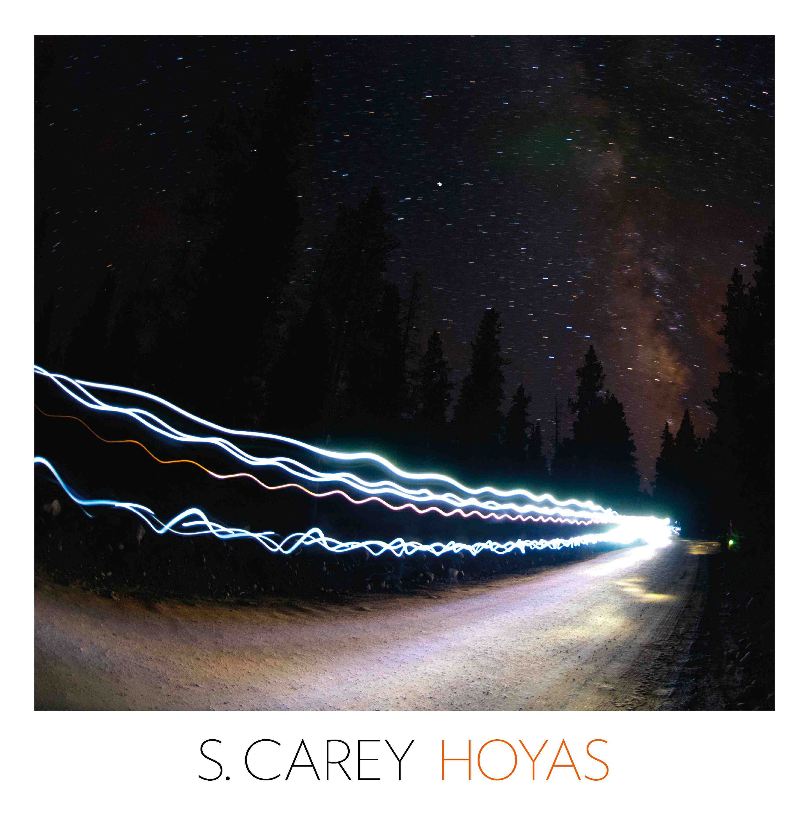

HOYAS EP
05.08.2012

Hoyas by S. Carey is a hospitable statement about love, longing and the celebration of knowing it well. You will find the familiar S. Carey modern classical repetition pushed into the vernacular of electronic music and beat making. This is the warmest electronic music you'll ever meet. The beats swing, stutter and pulse while each instrument retains a heightened awareness of its form and function within the larger family of voices.
These songs are for nighttime driving, for long exposures of stars circling overhead, for laying roadside, feeling small, for the cold rocks at Big Falls, for Marfa, that weird and beautiful oasis. These songs are about the ambient sides of life.
Tracklist:
1. Two Angles
5:27
2. Avalanche
5:01
3. Inspir
3:58
4. Marfa
3:51